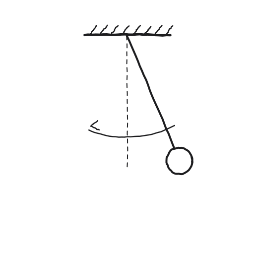

SF AI Research Hackathon · Open Track
Kinetic Sketch Autoresearch
A model that writes animation code can't see its mistakes. Ours renders what it wrote, watches it, fixes it, and tests whether the lessons carry to new drawings.
Sketches, textbook diagrams, cartoons and logos in; stylized animation programs out.

a textbook drawing
the loop's animation